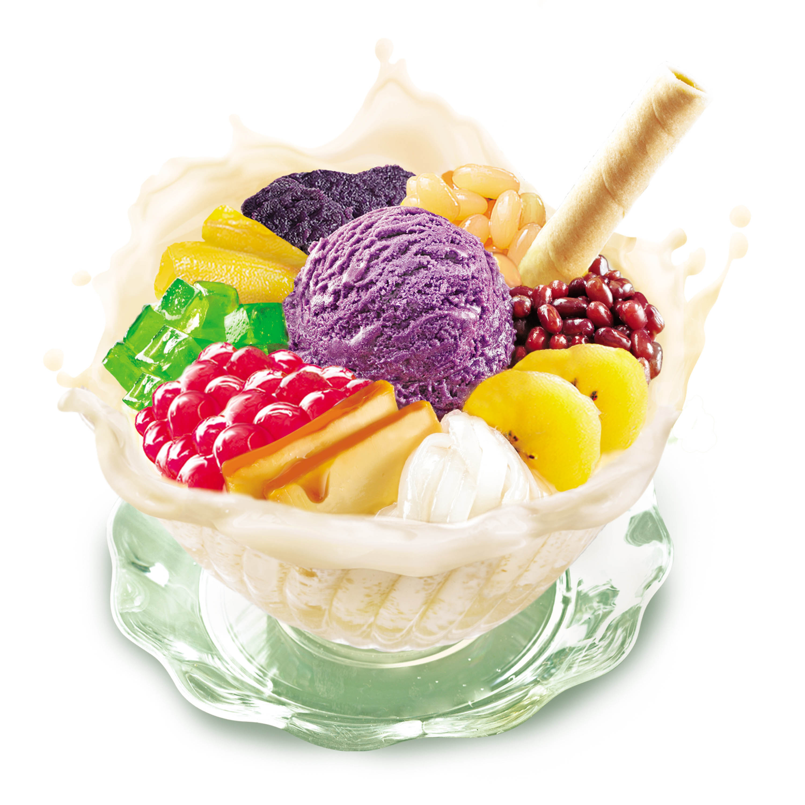
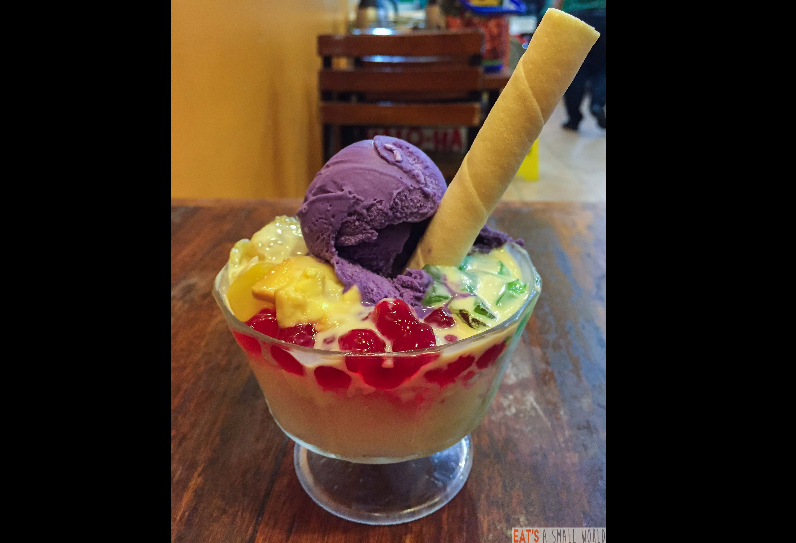

Marc Andrei Bautista
Avion School
HTML/CSS homework
Their halo-halo has red mung beans, white beans,
ube, macapuno, and what makes it unique, the sweetened kundol
or wintermelon. For their topping, instead of the usual
leche flan, they use sweetened tumbong ng niyog
(the growth that sprouts inside the coconut when it matures).
Find Here
- halohalo on commercial

- actual halo halo
